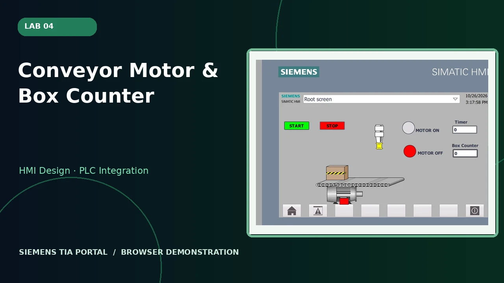
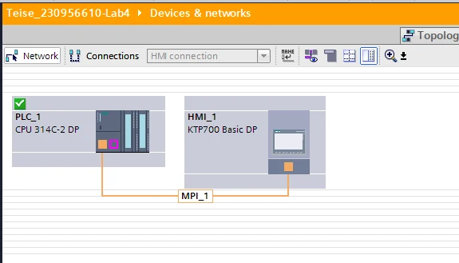
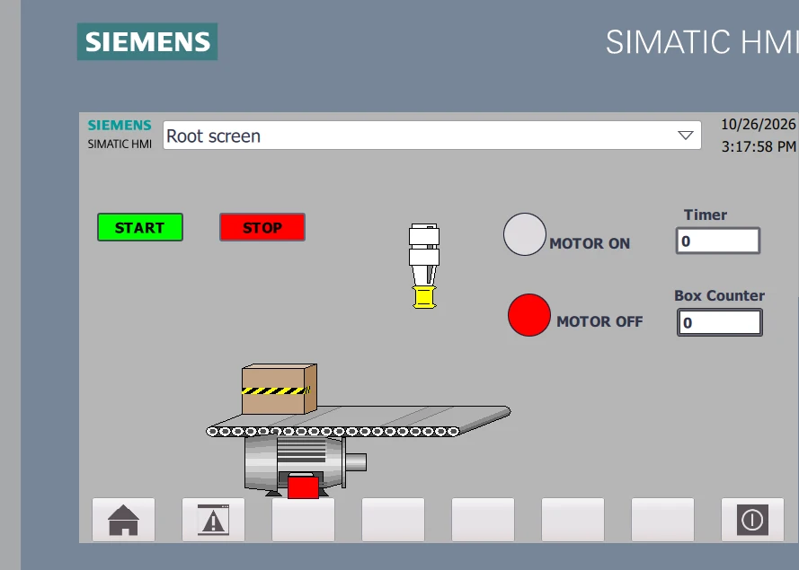
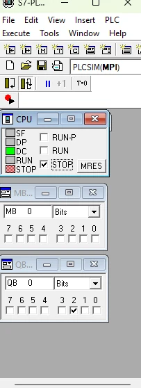
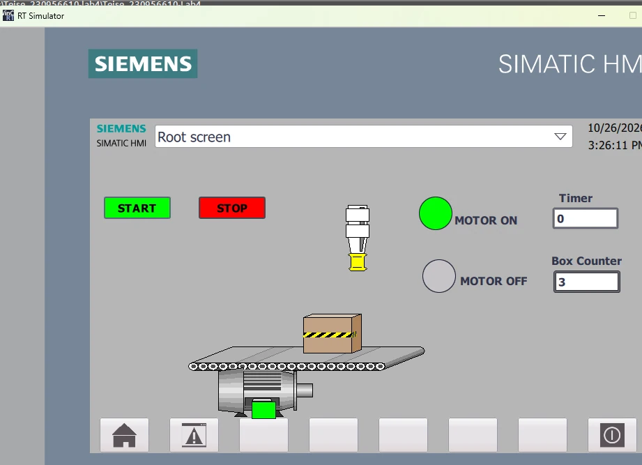
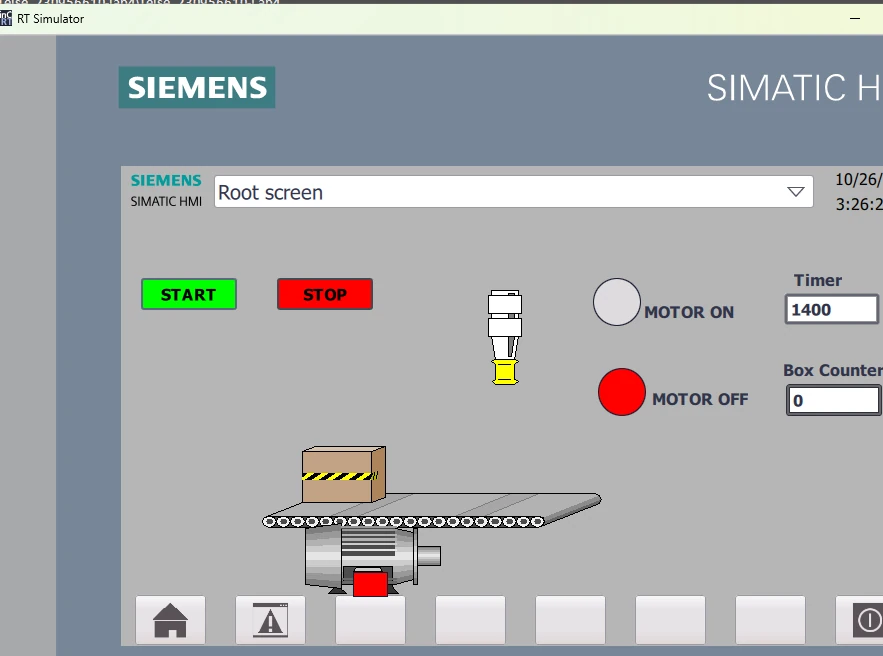
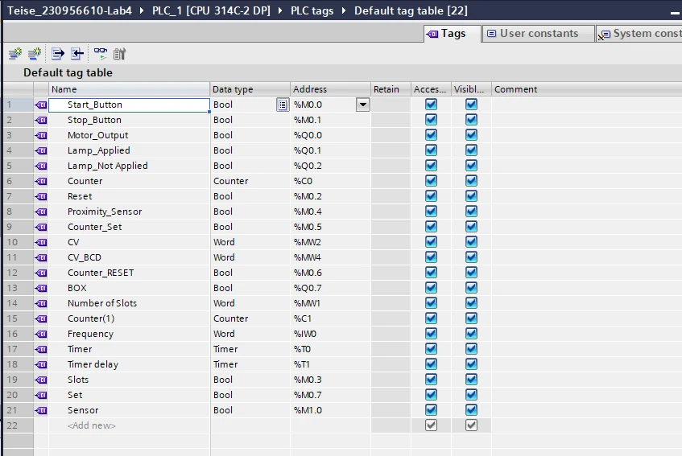

Lab 04: Conveyor Motor & Box Counter
An HMI view of a conveyor with object sensing, timer and box tracking.

What the system does
The HMI screenshots show motor ON/OFF indicators, a conveyor with a box, a timer field and a box counter. The exact object travel physics and full PLC state transitions are not fully recoverable from the screenshots.
Functional stages
- HMI displays motor ON/OFF indication and a conveyor graphic
- A proximity sensor and counter represent detected boxes
- Timer and count are exposed to the user on the HMI
Actual project evidence






Siemens TIA Portal project archive
Download ZIP ↓Original supplied project retained unchanged internally. Some filenames and project metadata contain student identifiers.